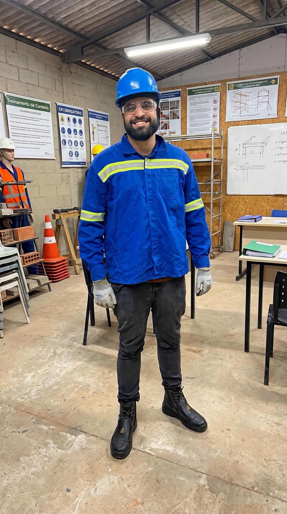

Captura Inteligente do Conhecimento
As reuniões diárias da operação viraram dado estruturado. 1.681 problemas registrados em 3 meses de piloto, com 97% de encaminhamento definido.
Finalista Prêmio Inovativos 2026
+100
processos automatizados
170
operações atendidas
12 horas
economizadas por semana até a primeira entrega
As reuniões diárias da operação viraram dado estruturado. 1.681 problemas registrados em 3 meses de piloto, com 97% de encaminhamento definido.
Finalista Prêmio Inovativos 2026
Plataforma de IA para advocacia trabalhista, desenvolvida pela Kalidash.
→Visão computacional aplicada à operação.
→Às vezes encontramos um problema tão específico que nenhuma ferramenta de mercado resolve. Quando isso acontece, a gente constrói.
São tecnologias desenvolvidas pela Kalidash, a partir de operações reais e usadas por empresas hoje.
Falar sobre o meu caso →01
Tecnologia para automatizar atendimento, financeiro e gestão de KPIs de escritórios de advocacia em um só lugar, reduzindo o trabalho operacional e aumentando o controle sobre o negócio.
Triagem e acompanhamento automatizados sem perder o contexto de cada cliente.
Rotinas operacionais organizadas em fluxo contínuo, com menos retrabalho.
Indicadores do escritório consolidados em tempo real para apoiar decisões.

02
A operação fala e o Spectra AI traduz. Câmeras transformam o que acontece na operação em dados de produtividade, identificando oportunidades em tempo real e apontando onde melhorar.
Câmeras conectadas ao ambiente físico traduzem a rotina sem interromper o time.
O que antes dependia de observação manual vira histórico estruturado.
Identificação objetiva de gargalos e pontos de melhoria na operação.